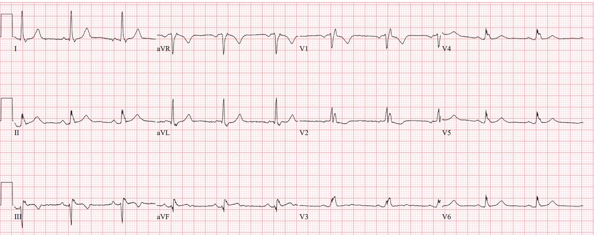
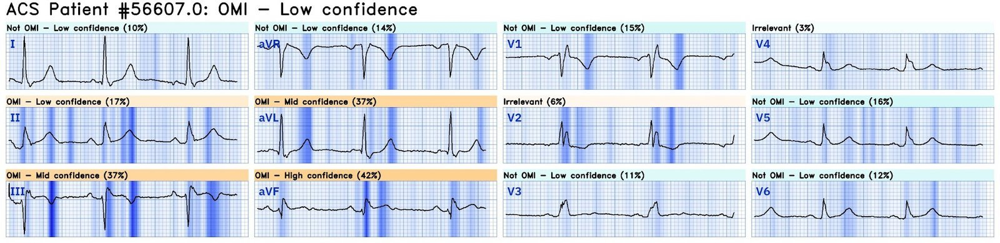
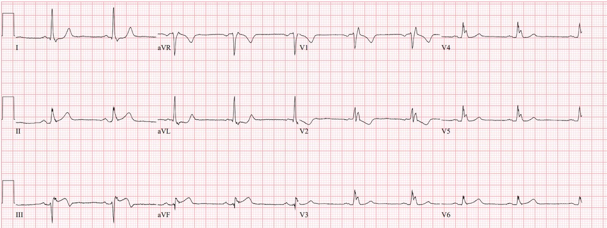
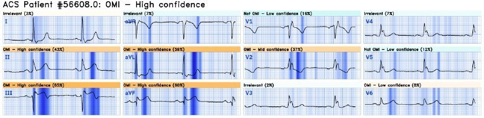
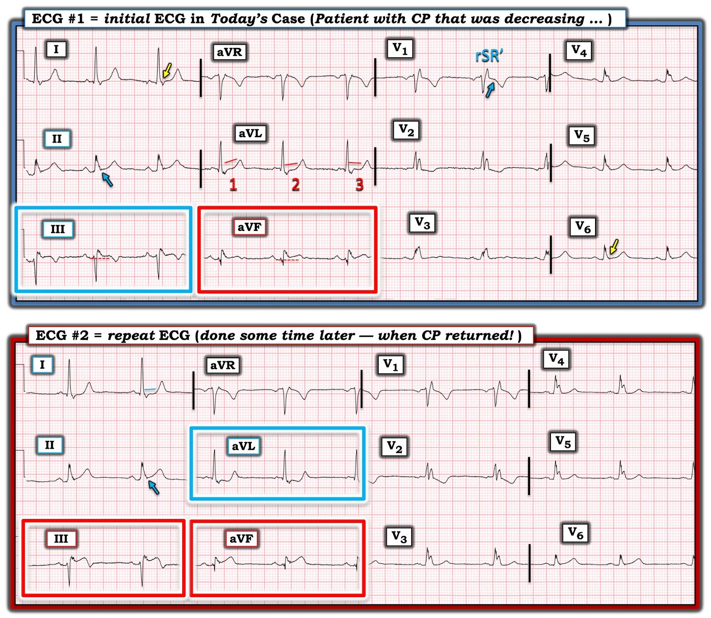

20/08/2024 — Một bệnh nhân 69 tuổi bị đau ngực cấp
Bản dịch tiếng Việt của bài "A 69 year old with acute chest pain" – Dr. Smith’s ECG Blog. Giữ nguyên toàn bộ 6 hình ảnh và 2 video của bản gốc.
Điện tâm đồ này được Sam Ghali gửi email cho tôi. (@EM_RESUS)
“Anh nghĩ sao, Steve? Phụ nữ 69 tuổi đau ngực.”


Bạn nghĩ sao?
Tôi trả lời: “Gợi ý OMI thành dưới, nhưng chưa hẳn đủ để chẩn đoán.”
Có blốc nhánh phải không hoàn toàn (incomplete RBBB). Có ST chênh lên (STE) tối thiểu ở chuyển đạo III kèm sóng T đảo ngược, gợi ý nhồi máu cơ tim cấp đã tái tưới máu ở một mức độ nào đó. aVF cũng vậy. Có ST chênh xuống (STD) soi gương tối thiểu ở aVL.Có STD ngược hướng với mức độ bình thường ở V2.
Đây là kết quả đọc của Queen of Hearts:


Giống hệt tôi! OMI với độ tin cậy thấp.
Bấm vào đây để đăng ký sử dụng Queen of Hearts
Sam trả lời:
“Tôi đồng ý. Cơn đau của bà ấy đã đỡ hơn nhiều. Các mặt cắt siêu âm tim ở ca này khó. Bà có các điện tâm đồ trước đây trông rất giống, nhưng lúc đó dường như đã có vấn đề ở SGA-RCA [người dịch: nguyên văn ghi “SGA-RCA”, nhiều khả năng là SVG-RCA – cầu nối tĩnh mạch hiển tới RCA].”
“Tôi dặn bà báo ngay cho chúng tôi nếu đau trở lại.”
“Cơn đau đã trở lại và chúng tôi ghi lại điện tâm đồ 2:”


Giờ thì nó đã đủ để chẩn đoán OMI thành dưới.
Và Queen đồng ý:


Bấm vào đây để đăng ký sử dụng Queen of Hearts
Bệnh nhân được chụp mạch vành ngay.
Chụp mạch vành cho thấy tắc RCA (cầu nối tĩnh mạch hiển (SVG) tới RCA ở bệnh nhân đã từng phẫu thuật bắc cầu chủ vành (CABG))
Đây là các hình ảnh chụp mạch vành:
Với tôi, nó trông như tắc hoàn toàn, rồi sau đó mở ra. Nhưng nó được gọi là dòng chảy “TIMI-1”.
Những điểm cần học:
1. Hãy dùng Queen of Hearts
2. Ghi các điện tâm đồ liên tiếp

===================================
BÌNH LUẬN CỦA TÔI, bởi KEN GRAUER, MD (20/8/2024):
===================================
Đọc điện tâm đồ của một bệnh nhân đã biết có bệnh mạch vành, nhưng không có bản ghi trước đó để so sánh, luôn là một thử thách. Điều này càng đúng khi có rối loạn dẫn truyền nền. Với tôi cũng vậy trong ca hôm nay — vì ban đầu tôi được xem điện tâm đồ này khi chỉ biết rằng bệnh nhân có tiền sử phẫu thuật bắc cầu chủ vành (CABG).
- Để rõ ràng, trong Hình 1 — tôi đã đặt lại 2 điện tâm đồ của ca hôm nay, và đánh dấu những dấu hiệu điện tâm đồ ngay lập tức “lọt vào mắt tôi”.


SUY NGHĨ CỦA TÔI về các điện tâm đồ trong Hình 1:
Như tôi đã nói ở trên — lần đầu tôi xem điện tâm đồ ban đầu của ca hôm nay khi chỉ biết rằng người phụ nữ 69 tuổi này đã từng phẫu thuật CABG, và nay đến khám vì CP (Chest Pain – đau ngực).
- Việc đọc điện tâm đồ #1 rõ ràng sẽ dễ hơn nhiều với tôi — NẾU tôi có được điện tâm đồ trước đây của bệnh nhân này. Với tiền sử bệnh mạch vành đã biết — chắc chắn đã có nhiều điện tâm đồ được ghi trước đó. Dù vậy — thực tế lâm sàng là không phải lúc nào cũng có thể xem ngay các điện tâm đồ trước đây vào lúc khám bệnh nhân — vì vậy, tự rèn luyện việc đánh giá điện tâm đồ khi thông tin hạn chế là một thói quen tốt.
Tin tốt ở bệnh nhân đến khám vì “đau ngực” này — là ngay cả khi không có bản ghi trước đó — điện tâm đồ ban đầu trong Hình 1 vẫn nên được đọc là rất đáng ngờ OMI cấp cho đến khi chứng minh được điều ngược lại.
- Nhịp trên điện tâm đồ #1 là nhịp xoang tần số ~60-65/phút. Khoảng PR bình thường — nhưng QRS rộng (khoảng ~0.12 giây). Phức bộ rSR’ ở chuyển đạo V1 gợi ý RBBB (Right Bundle Branch Block – blốc nhánh phải) — tuy nhiên RBBB này không điển hình ở chỗ sóng S tận ở chuyển đạo I rất nhỏ, và không thấy sóng S nào ở chuyển đạo bên V6 (các mũi tên VÀNG đánh dấu vị trí lẽ ra phải thấy sóng S tận rộng khi có dẫn truyền RBBB).
- Không có lớn buồng tim.
Về Thay đổi sóng Q–R–S–T:
- Có sóng Q nhỏ và hẹp ở các chuyển đạo bên cao I và aVL. Đây có lẽ là sóng q vách bình thường, không có ý nghĩa.
- LƯU Ý: Mặc dù thoạt nhìn có vẻ như có sóng Q ở chuyển đạo III và aVF — thực ra không phải vậy (vì sóng khởi đầu của QRS ở chuyển đạo III và aVF là một sóng dương nhỏ = sóng r).
- Như vậy, có phức bộ rSR’ ở chuyển đạo III — chuyển đạo hướng về bên phải — và ở chuyển đạo aVF — chuyển đạo nằm phía dưới. Dấu hiệu phức bộ rSR’ ở một hoặc cả hai chuyển đạo này — đôi khi gặp cùng với (và phù hợp với) hình ảnh RBBB ở chuyển đạo V1.
- Tăng tiến sóng R ở các chuyển đạo trước tim không còn nhiều ý nghĩa, do vùng chuyển tiếp sớm vốn thường gặp khi có dẫn truyền RBBB.
Về Thay đổi sóng ST-T trên điện tâm đồ #1:
- “Mắt” tôi ngay lập tức bị thu hút vào chuyển đạo aVF trên điện tâm đồ #1 (trong hình chữ nhật ĐỎ). Ở một bệnh nhân đau ngực (CP) mới xuất hiện — không thể nào đoạn khởi đầu ST thẳng đuỗn kèm ST chênh lên nhẹ-nhưng-thật lại là dấu hiệu “bình thường”. Xem kỹ hơn — dường như còn có sóng T đảo ngược phần cuối nhẹ-nhưng-thật ở chuyển đạo aVF (nếu không phải là sóng T hai pha âm-dương ở phần cuối trong chuyển đạo này).
- Tiếp theo, “mắt” tôi bị thu hút vào chuyển đạo III trên điện tâm đồ #1 (trong hình chữ nhật XANH) — cho thấy ST chênh lên kín đáo, kèm sóng T đảo ngược phần cuối rõ ràng.
- Với các bất thường ở 2 chuyển đạo thành dưới này — ngưỡng để tôi đánh giá thay đổi sóng ST-T ở chuyển đạo II cũng được hạ thấp tương ứng — đến mức tôi đọc ST chênh lên ở điểm J trong chuyển đạo này là rõ ràng bất thường, và ủng hộ khả năng OMI thành dưới cấp (mũi tên XANH ở chuyển đạo II của điện tâm đồ #1).
- Bằng chứng ủng hộ thêm cho OMI thành dưới có thể đến từ việc đánh giá chuyển đạo aVL. Đáng tiếc — hình dạng sóng ST-T ở chuyển đạo aVL lại mơ hồ (equivocal). Trong khi đoạn ST dốc xuống ở phức bộ thứ 3 của chuyển đạo này rõ ràng phù hợp với thay đổi soi gương (có lẽ đoạn ST gần nằm ngang ở phức bộ thứ 2 trong aVL cũng vậy) — thì phức bộ QRST thứ 1 ở aVL lại có đoạn ST dốc lên mà tôi thấy mơ hồ. ĐIỂM THEN CHỐT (PEARL): Sự khác biệt kín-đáo-nhưng-thật về hình dạng sóng ST-T trong cùng một chuyển đạo trên một điện tâm đồ là một điểm nâng cao, nhấn mạnh tầm quan trọng của việc luôn phân biệt điều gì là (và không là) “thật”.
- Sóng ST-T ở chuyển đạo bên cao còn lại ( = chuyển đạo I) trông thẳng đuỗn, nhưng không chênh xuống.
- Tôi thấy việc đánh giá hình dạng sóng ST-T ở các Chuyển đạo trước tim khó khăn và không đi đến kết luận. Đoạn ST ở chuyển đạo V1 có dạng vòm (coving) và rõ ràng cao hơn so với thường thấy khi có RBBB (mũi tên XANH ở chuyển đạo này) — vì phần lớn trường hợp, điểm J ở chuyển đạo V1 khi có RBBB thấp hơn, như ta thấy ở đây trong chuyển đạo V2. Dù vậy — khi không có bản ghi trước đó để so sánh, tôi không thể rút ra kết luận nào về ST dẹt ở chuyển đạo V3 và các sóng T dương ở những chuyển đạo trước tim còn lại (có lẽ tất cả đều là di chứng của bệnh mạch vành nền đã biết của bệnh nhân?).
ĐIỀU CỐT LÕI về điện tâm đồ #1:
Với bệnh sử đau ngực mới xuất hiện ở bệnh nhân lớn tuổi đã biết có bệnh mạch vành này — tôi đọc hình dạng sóng ST-T ở các chuyển đạo chi là gợi ý OMI thành dưới cấp cho đến khi chứng minh được điều ngược lại.
- Sóng T đảo ngược ở chuyển đạo III và aVF — có thể phản ánh sóng T tái tưới máu sau OMI thành dưới. Sau này tôi mới biết rằng cơn đau ngực của bệnh nhân này chắc chắn đang giảm dần vào lúc ghi điện tâm đồ #1 — điều này sẽ ủng hộ giả thuyết rằng các sóng T này thể hiện tái tưới máu tự phát.
- Tìm được điện tâm đồ trước đây có thể giúp rất nhiều trong việc làm rõ thay đổi nào là mới hay cũ — hay mới chồng lên cũ.
- Phải “có mặt tại đó” — mới có thể quyết định LIỆU các dấu hiệu sóng ST-T trên điện tâm đồ #1 có đủ (hay không đủ) để kích hoạt phòng thông tim (cath lab) chỉ dựa trên điện tâm đồ ban đầu này hay không (và để thuyết phục bác sĩ can thiệp đang trực thông tim cho bệnh nhân). Quyết định đó có thể dễ dàng hơn nhờ so sánh từng chuyển đạo với một hoặc nhiều bản ghi trước đây của bệnh nhân.
- Dù thế nào — ghi một điện tâm đồ theo dõi trong vòng 20-30 phút tiếp theo khi cơn đau ngực của bệnh nhân tiếp tục giảm — có thể mang lại nhiều thông tin (tức là, NẾU sóng T tái tưới máu tiếp tục tiến triển khi cơn đau ngực tiếp tục giảm — điều đó gợi ý thay đổi sóng ST-T “động” đi kèm với sự hết đau ngực — qua đó củng cố chỉ định thông tim sớm).
Điện tâm đồ được ghi lại:
Một thời gian sau điện tâm đồ #1 (? sau bao lâu?) — cơn đau ngực của bệnh nhân quay trở lại, và điện tâm đồ #2 được ghi. Như Dr. Smith đã nói — chẩn đoán OMI thành dưới cấp giờ đây là không còn nghi ngờ gì nữa.
- So sánh từng chuyển đạo giữa điện tâm đồ #1 và điện tâm đồ #2 giúp nhận ra mọi thay đổi (Xem Hình 1).
- Mức ST chênh lên và hình dạng tối cấp của sóng ST-T ở chuyển đạo III và aVF rõ ràng đã tăng lên.
- ST chênh lên bất thường ở điểm J trong chuyển đạo II của điện tâm đồ #2 vẫn còn (mũi tên XANH ở chuyển đạo này).
- Nghi vấn trước đây của tôi về việc sóng nào trong 3 sóng ST-T ở chuyển đạo aVL của điện tâm đồ #1 là “thật” — giờ đã được giải quyết hoàn toàn nhờ mức ST chênh xuống soi gương dốc xuống tăng lên ở chuyển đạo aVL. Lưu ý phần cuối sóng T dương không chỉ ở chuyển đạo aVL, mà cả ở chuyển đạo I.
- Ở các Chuyển đạo trước tim của điện tâm đồ #2 — tôi nghĩ rằng sóng T đảo ngược sâu hơn ở chuyển đạo V2, và sóng T nay đã dương ở chuyển đạo V3 — có thể là những thay đổi thật, phù hợp với OMI thành sau.
“Phỏng đoán” của tôi (trước khi xem phim thông tim):
- Tôi nghi ngờ rằng thông tim sẽ cho thấy OMI cấp do tắc RCA đoạn gần — với OMI dưới-sau. Đoạn ST dạng vòm với điểm J cao hơn thường lệ đối với RBBB thấy ở chuyển đạo V1 của điện tâm đồ #1 — có thể phản ánh tổn thương thất phải — điều này có thể đã làm giảm bớt ST chênh xuống do OMI thành sau (mà lẽ ra đã thấy ở chuyển đạo V2,V3). Cuối cùng — điểm J chênh lên nhẹ kèm sóng T dương (và không có sóng S tận kiểu rbbb) thấy ở chuyển đạo V6 có thể là hậu quả của nhồi máu thành bên đi kèm ở bệnh nhân có RBBB này. Nếu có cơ hội được xem các bản ghi trước đây của bệnh nhân này, có lẽ những suy đoán trên của tôi đã được làm rõ.
- “Điều cần nhớ” — Tôi thấy việc dự đoán trước các dấu hiệu sẽ gặp khi thông tim dựa trên phân tích điện tâm đồ là rất bổ ích. Như chúng tôi đã cho thấy trong các bài trước trên Dr. Smith’s ECG Blog — do việc thông tim cấp thường bị chậm trễ — “động mạch thủ phạm thực sự” thường không được xác định đúng khi thông tim. Vì vậy — rèn luyện khả năng dự đoán động mạch “thủ phạm” có khả năng nhất dựa trên các dấu hiệu điện tâm đồ mà ta nhận ra có thể đôi khi trở nên vô giá trong việc định hướng cho bác sĩ can thiệp biết động mạch nào sẽ được hưởng lợi từ PCI.
- T.B. (P.S.): Tôi nghĩ một thói quen tốt là luôn đòi hỏi tự mình xem các điện tâm đồ trước đây — thay vì chấp nhận bản báo cáo viết tay về các dấu hiệu trên điện tâm đồ trước đó.